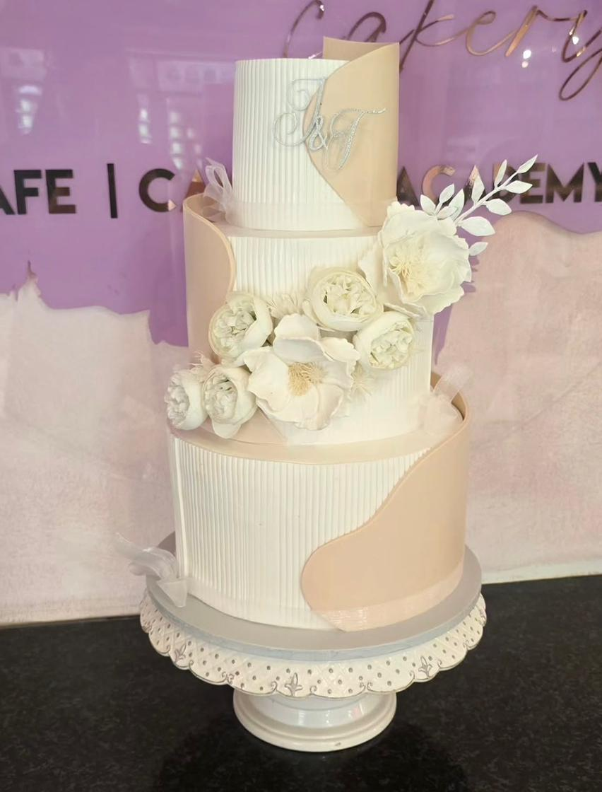

About Leona's Cakery
Leona's Cakery started in 2022 in a small Pretoria kitchen with one oven and a big dream: to make beautiful, delicious cakes that create memories.

Our Story
What began as birthday cakes for family and friends quickly grew by word of mouth. Today, we specialize in custom birthday cakes, wedding cakes, and cupcakes for all occasions across Pretoria and surrounding areas.
Our Promise
Every cake is baked from scratch using real butter, free-range eggs, and quality ingredients. We don’t use premixes. Each design is hand-piped and decorated with care, because we believe your celebration deserves something special.
Thank you for supporting a local Pretoria business. We can’t wait to bake for you!
We provide web design and development services for small businesses.
Most projects take 2-4 weeks depending on complexity.